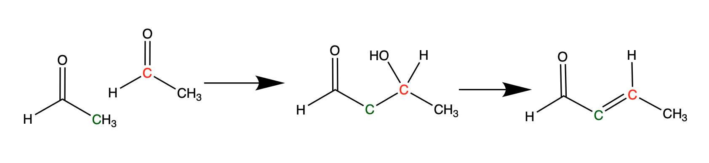
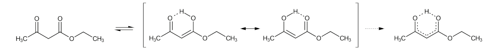

Note: Carbonyl Chemistry Lab has two parts: Aldol Reaction and Keto-Enol Equilibrium Study
The Aldol Reaction is a reaction in which an α-carbon of an enol or enolate is nucleophilic and adds to a carbonyl compound. The result of this reaction is an aldol (β-hydroxyaldehyde or β-hydroxyketone) which is then followed by an essentially irreversible dehydration reaction to form a α-β unsaturated carbonyl (Figure 1). The combined steps of aldol reaction and dehydration is called the aldol condensation.

Figure 1. Aldol Condensation
The aldol condensation is an important pathway for creating C-C bonds in organic synthesis. In addition, the α-β unsaturated carbonyl can undergo further synthetic steps through nucleophilic addition.
Video:
https://www.youtube.com/watch?v=fbNf_guvK_0
Keto-enol tautomerism is the enolization of a ketone or aldehyde to its corresponding enol or enolate and the equilibrium conditions between the two forms. Enolization can take place in either acidic conditions (resulting in an enol) or basic conditions (resulting in an enolate). Typically, the keto form dominates at equilibrium. However, β-dicarbonyls are far more extensively enolized than molecules with isolated carbonyl groups because they are significantly more acidic.

Figure 1. Keto-enol tautomerism of ethyl acetoacetate.
The equilibrium factor can be expressed in the Keq equation. In this assignment, you will visualize the enolization of ethyl acetoacetate and calculate the Keq for the keto-enol equilibrium using 1H NMR. In addition to illuminating the structure of a molecule, NMR spectra also provide the relative concentration of different species present at equilibrium. The integration of a peak of the enol form and one of the keto form can be used to calculate Keq. Note that weighting factors based on the number of protons being represented by the peak must be taken into account during calculations.
Video
https://www.youtube.com/watch?v=Es6FE6NCj2k
Watch the video and write down observations of what is occurring as if you were performing the experiment in the lab.